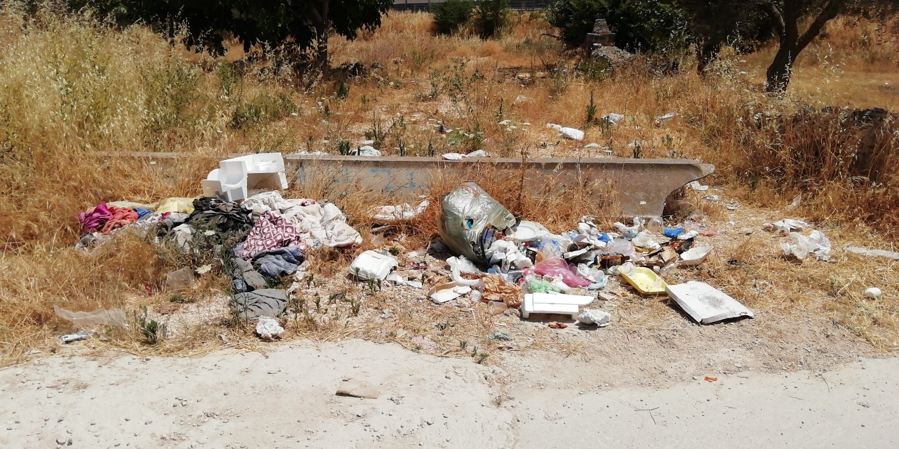

<!DOCTYPE html>
<html>
<head>
    <meta charset='utf-8' />
    <title>Mapbox Storytelling</title>
    <meta name='viewport' content='initial-scale=1,maximum-scale=1,user-scalable=no' />
    <script src='https://api.tiles.mapbox.com/mapbox-gl-js/v2.0.0/mapbox-gl.js'></script>
    <link href='https://api.tiles.mapbox.com/mapbox-gl-js/v2.0.0/mapbox-gl.css' rel='stylesheet' />
    <script src="https://unpkg.com/intersection-observer@0.5.1/intersection-observer.js"></script>
    <script src="https://ajax.googleapis.com/ajax/libs/jquery/3.1.1/jquery.min.js"></script>
    <script src='https://npmcdn.com/@turf/turf/turf.min.js'></script>
    <script src="https://unpkg.com/scrollama"></script>
    <style>
        body {
            margin:0;
            padding:0;
            font-family: sans-serif;
        }
        a, a:hover, a:visited {
            color: #b52a2a;

}
h2{
  color:#fafafa;
  }
      #map {
            top:0;
            height: 100vh;
            width:100vw;
            position: fixed;
        }
        #header {
            margin: auto;
            width: 50%;
            position: relative;
            z-index: 5;
        }
        #header h1, #header h2, #header p {
            margin: 0;
            padding: 2vh 2vw;
            text-align: center;
        }
        #footer {
            width: 100%;
            min-height: 5vh;
            padding-top: 2vh;
            padding-bottom: 2vh;
            text-align: center;
            line-height: 25px;
            font-size: 13px;
            position: relative;
            z-index: 5;
        }
        #features {
            padding-top: 10vh;
            padding-bottom: 10vh;
            text-align: center;
        }
        .hidden {
            visibility: hidden;
        }
        .centered {
            width: 50vw;
            margin: 0 auto;
        }
        .lefty {
            width: 33vw;
            margin-left: 5vw;
        }
        .righty {
            width: 33vw;
            margin-left: 62vw;
        }
        .fully {
            width: 100%;
            margin: auto;
        }
        .light {
            color: #444;
            background-color: #fafafa;
        }
        .dark {
            color: #fafafa;
            background-color: #0a0a0a;

        }
        .step {
            padding-bottom: 20vh;
            /* margin-bottom: 10vh; */
            opacity: 0.8;
        }
        .step.active {
            opacity: 0.8;
        }

        .step div {
            padding:  25px 50px;
            line-height: 25px;
            font-size: 13px;
        }

        .step img {
            width: 100%;
        }
        .step video {
            width: 100%;
        }

        @media (max-width: 750px) {
            .centered, .lefty, .righty, .fully {
                width: 90vw;
                margin: 0 auto;
            }
        }

                .marker {

background-size: cover;
width: 800px;
height: 600px;
border-radius: 50%;
cursor: pointer;
}
}
.mapboxgl-popup {
max-width: 800px;
}

.mapboxgl-popup-close-button {
  display: block;
  color: #fafafa;
  z-index: 1000;
}
.mapboxgl-popup-content {
color: #fafafa;
background-color:#0a0a0a;
opacity: 0.9;
max-width: 600px;
min-width: 300px;
border-radius: 12px;
box-shadow: 0 3px 14px #0a0a0a;
font-family: sans-serif;
font-size: 13px;
padding-top: 1vh;
padding-bottom: 1vh;
text-align: center;
line-height: 1.8;
}
.adimage {
   height: 300px;
}

.adimage {
  height: 100%;
  width: auto;
}
  .ppcont{
    width:100px;
  }
.mapboxgl-popup-image {
  max-height: 500px;
  max-width: 500px;
  height: 50%;
  width: 50%;
}
      }
  }


        /* Fix issue on mobile browser where scroll breaks  */
        .mapboxgl-canvas-container.mapboxgl-touch-zoom-rotate.mapboxgl-touch-drag-pan,
        .mapboxgl-canvas-container.mapboxgl-touch-zoom-rotate.mapboxgl-touch-drag-pan .mapboxgl-canvas {
            touch-action: unset;
        }

        </style>
</head>
<body>

<div id="map"></div>
<div id="story"></div>
<script src="./config.js"></script>
<script src="./js/drive.js"></script>
<script>

var layerTypes = {
    'fill': ['fill-opacity'],
    'line': ['line-opacity'],
    'circle': ['circle-opacity', 'circle-stroke-opacity'],
    'symbol': ['icon-opacity', 'text-opacity'],
    'raster': ['raster-opacity'],
    'fill-extrusion': ['fill-extrusion-opacity']
}

var alignments = {
    'left': 'lefty',
    'center': 'centered',
    'right': 'righty',
    'full': 'fully'
}

function getLayerPaintType(layer) {
    var layerType = map.getLayer(layer).type;
    return layerTypes[layerType];
}

function setLayerOpacity(layer) {
    var paintProps = getLayerPaintType(layer.layer);
    paintProps.forEach(function(prop) {
        map.setPaintProperty(layer.layer, prop, layer.opacity);
    });
}

var story = document.getElementById('story');
var features = document.createElement('div');
features.classList.add(alignments[config.alignment]);
features.setAttribute('id', 'features');

var header = document.createElement('div');

if (config.title) {
    var titleText = document.createElement('h1');
    titleText.innerText = config.title;
    header.appendChild(titleText);
}

if (config.subtitle) {
    var subtitleText = document.createElement('h2');
    subtitleText.innerText = config.subtitle;
    header.appendChild(subtitleText);
}

if (config.byline) {
    var bylineText = document.createElement('p');
    bylineText.innerText = config.byline;
    header.appendChild(bylineText);
}

if (header.innerText.length > 0) {
    header.classList.add(config.theme);
    header.setAttribute('id', 'header');
    story.appendChild(header);
}

config.chapters.forEach((record, idx) => {
    var container = document.createElement('div');
    var chapter = document.createElement('div');

    if (record.title) {
        var title = document.createElement('h3');
        title.innerText = record.title;
        chapter.appendChild(title);
    }

    if (record.image) {
        var image = new Image();
        image.src = record.image;
        chapter.appendChild(image);
    }

    if (record.description) {
        var story = document.createElement('p');
        story.innerHTML = record.description;
        chapter.appendChild(story);
    }

    container.setAttribute('id', record.id);
    container.classList.add('step');
    if (idx === 0) {
        container.classList.add('active');
    }

    chapter.classList.add(config.theme);
    container.appendChild(chapter);
    container.classList.add(alignments[record.alignment] || 'centered');
    if (record.hidden) {
        container.classList.add('hidden');
    }
    features.appendChild(container);
});

story.appendChild(features);

var footer = document.createElement('div');

if (config.footer) {
    var footerText = document.createElement('p');
    footerText.innerHTML = config.footer;
    footer.appendChild(footerText);
}

if (footer.innerText.length > 0) {
    footer.classList.add(config.theme);
    footer.setAttribute('id', 'footer');
    story.appendChild(footer);
}

mapboxgl.accessToken = config.accessToken;

const transformRequest = (url) => {
    const hasQuery = url.indexOf("?") !== -1;
    const suffix = hasQuery ? "&pluginName=scrollytellingV2" : "?pluginName=scrollytellingV2";

    return {
      url: url + suffix
    }
}

var map = new mapboxgl.Map({
    container: 'map',
    style: config.style,
    // center: config.chapters[0].location.center,
    // zoom: config.chapters[0].location.zoom,
    // bearing: config.chapters[0].location.bearing,
    // pitch: config.chapters[0].location.pitch,
    scrollZoom: false,
    transformRequest: transformRequest
});

var marker = new mapboxgl.Marker();
if (config.showMarkers) {
    marker.setLngLat(config.chapters[0].location.center).addTo(map);
}

// instantiate the scrollama
var scroller = scrollama();

function handleStepProgress(response) {
    let stepProgress;

    if (response.element.id.slice(0,5) === 'drive') {
        let driveSlideNum = parseInt(response.element.id.slice(-1));
        if (driveSlideNum === 0) {
            map.setLayoutProperty('animatedLine', 'visibility', 'visible');
            stepProgress = Math.round(response.progress*driveSmoothness);
        } else {
            stepProgress = Math.round(response.progress*driveSmoothness+driveSmoothness*driveSlideNum);
        }
        changeCenter(stepProgress);
    }
}

map.on("load", function() {

    let w = window.innerWidth;
    let initBounds = routeData.features[0].geometry.coordinates;

    if (followPoint === false) {
        var bounds = initBounds.reduce(function(bounds, coord) {
            return bounds.extend(coord);
        }, new mapboxgl.LngLatBounds(initBounds[0], initBounds[0]));

        if (w >= 500) {
            map.fitBounds(bounds, {
                padding: {top: 150, bottom: 150, right: -100, left: 200},
                duration: 0
            });
        } else {
            map.fitBounds(bounds, {
                padding: 20,
                duration: 0
            });
        }
    } else {
        map.setZoom(followZoomLevel);
        map.setBearing(followBearing);
        map.setPitch(followPitch);
    }

    map.addSource('lineSource', {
        "type": "geojson",
        "data": geojsonPoint
    });

    map.addSource('pointSource', {
        "type": "geojson",
        "data": geojsonPoint
    });

    map.addLayer({
      "id": "animatedLine",
      "type": "line",
      "source": "lineSource",
      'paint': {
            'line-opacity': 1,
            'line-color': '#8a1617',
            'line-width': 3.5
       },
       'layout': {
           'visibility': 'none'
       }
    });

    map.addLayer({
      "id": "animatedPoint",
      "type": "circle",
      "source": "pointSource",
      'paint': {
            'circle-radius': 5,
            'circle-opacity': 1,
            'circle-color': '#8a1617'
      },
      'layout': {
           // 'visibility': 'none'
       }
    });

    // setup the instance, pass callback functions
    scroller
    .setup({
        step: '.step',
        offset: 0.6,
        progress: true
    })
    .onStepEnter(response => {
        var chapter = config.chapters.find(chap => chap.id === response.element.id);
        response.element.classList.add('active');
        // map.flyTo(chapter.location);
        if (config.showMarkers) {
            marker.setLngLat(chapter.location.center);
        }
        if (chapter.onChapterEnter.length > 0) {
            chapter.onChapterEnter.forEach(setLayerOpacity);
        }
    })
    .onStepExit(response => {
        var chapter = config.chapters.find(chap => chap.id === response.element.id);
        response.element.classList.remove('active');
        if (chapter.onChapterExit.length > 0) {
            chapter.onChapterExit.forEach(setLayerOpacity);
        }
    })
    .onStepProgress(handleStepProgress);

    createLine();
});


// setup resize event
window.addEventListener('resize', scroller.resize);

map.on('load', function () {
    map.addSource('places', {
        'type': 'geojson',
        'data': {
            'type': 'FeatureCollection',
            'features': [
                {
                    'type': 'Feature',
                    'properties': {
                        'description':
                            '<h2><strong>Bari</h2></strong><p>Cominicia l\'inchiesta, diretta verso le terre lucane, con lentezza....</p>'
                    },
                    'geometry': {
                        'type': 'Point',
                        'coordinates': [16.871667,41.116944]
                    }
                },
                {
                    'type': 'Feature',
                    'properties': {
                        'description':
                            '<h2><strong>Bitetto</h2></strong><p> Nello zaino\, lo stretto indispensabile e un\'ispirazione\, il libro di Alliegro \‘Totem Nero\’ che definisce la Basilicata  \"una sintesi formidabile di paradossi \[...\]\, isolata ma centrale\, depressa ma ricca\, densa di opportunita\’ quanto di angoscia\"</p><a href="https://www.libreriauniversitaria.it/totem-nero-petrolio-sviluppo-conflitti/libro/9788879755979">Link a Totem Nero</a>'
                    },
                    'geometry': {
                        'type': 'Point',
                        'coordinates': [16.74821, 41.03978]
                    }
                },
                {
                    'type': 'Feature',
                    'properties': {
                        'description':
                            '<h2><strong>Cassano delle Murge</strong></h2><p>Una guida incontrata lungo la Via Peuceta, da osservatore esterno, mi parla della Basilicata come di \"una terra cuscinetto, di cui non si deve parlare, dove solo i mediocri restano e regna il silenzio\".</p>'
                    },
                    'geometry': {
                        'type': 'Point',
                        'coordinates': [16.76992, 40.88505]
                    }
                },
                {
                    'type': 'Feature',
                    'properties': {
                        'description':
                            '<h2><strong>Santeramo in Colle</h2></strong><iframe width="250" height="200" src="https://www.youtube.com/embed/4sKiwkKBq0U" title="YouTube video player" frameborder="0" allow="accelerometer; autoplay; clipboard-write; encrypted-media; gyroscope; picture-in-picture" allowfullscreen></iframe><p>Durante il cammino, ascolto la canzone composta da un cantautore per l\'inchiesta, al suon di musica avanzo nella murgia afosa.</p>'
                    },
                    'geometry': {
                        'type': 'Point',
                        'coordinates': [16.75535, 40.79241]
                    }
                },
                {
                    'type': 'Feature',
                    'properties': {
                        'description':
                            '<h2><strong>Altamura</h2></strong><p>Stridenti contrasti tra un cammino curato e ben segnato, e cumuli di rifiuti che marciscono accanto agli ulivi mi fanno presagire il sapore dell\'inchiesta.</p>'
                    },
                    'geometry': {
                        'type': 'Point',
                        'coordinates': [16.553611, 40.825278]
                    }
                },
                {
                    'type': 'Feature',
                    'properties': {
                        'description':
                            '<h2><strong>Gravina di Puglia</h2></strong><p>Incontro Mimmo, sentinella lucana che mi accompagnerà nel percorso dell\'inchiesta.</p>'
                    },
                    'geometry': {
                        'type': 'Point',
                        'coordinates': [16.419167, 40.816944]
                    }
                },
                {
                    'type': 'Feature',
                    'properties': {
                        'description':
                            '<h2><strong>Pisticci</h2></strong><p>Arrivo a Pisticci...Continua a seguire il mio viaggio sulla prossima mappa (aggiungi txt)</p>'
                    },
                    'geometry': {
                        'type': 'Point',
                        'coordinates': [16.55765, 40.39013]
                    }
                }
            ]
        }
    });
    // Add a layer showing the places.
    map.addLayer({
        'id': 'places',
        'type': 'circle',
        'source': 'places',
        'paint': {
            'circle-color': '#8a1617',
            'circle-radius': 6,
            'circle-stroke-width': 1,
            'circle-stroke-color': '#ffffff'
        }
    });

    // Create a popup, but don't add it to the map yet.
    var popup = new mapboxgl.Popup({
        closeButton: true,
        closeOnClick: true
    });


    map.on('mouseenter', 'places', function (e) {
        // Change the cursor style as a UI indicator.
        map.getCanvas().style.cursor = 'pointer';

        var coordinates = e.features[0].geometry.coordinates.slice();
        var description = e.features[0].properties.description;

        // Ensure that if the map is zoomed out such that multiple
        // copies of the feature are visible, the popup appears
        // over the copy being pointed to.
        while (Math.abs(e.lngLat.lng - coordinates[0]) > 180) {
            coordinates[0] += e.lngLat.lng > coordinates[0] ? 360 : -360;
        }

        // Populate the popup and set its coordinates
        // based on the feature found.
        popup.setLngLat(coordinates).setHTML(description).addTo(map);
    });

    map.on('click', 'places', function () {
        map.getCanvas().style.cursor = '';
        popup.remove();
    });
});


$(document).ready(function (){
    $.ajax({
      url:"./data/7-punti-ok.geojson",
      // url:"./data/parkstroll.geojson",
      dataType: "json",
      success: function (data) {
        console.log('data', data.features[0]);
        routeData = data;
      },
      error: function () {
        console.log('error loading data');
      }
    });
});

  </script>


</body>
</html>
